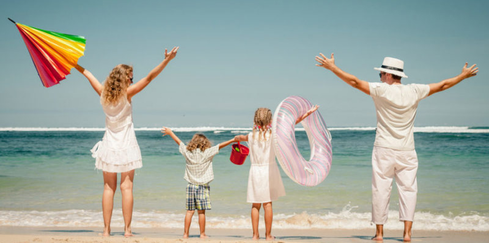

Между Грузией и Республикой Беларусь подписано соглашение о безвизовом режиме. Изначально данный договор подразумевал безвизовое пересечение грузинской и белорусской границы и нахождение граждан обеих стран в одном из государств на срок не более 90 дней
На фоне столь частых изменений в законодательстве, многие люди не знают, а нужна ли виза в Грузию белорусам в 2019 году и какой промежуток времени можно находиться на территории этой страны. .
В 2019 году виза в Грузию для белорусов не нужна по причине вступления в силу старого закона. Согласно ему подданные Республики Беларусь могут беспрепятственно находиться на территории Грузии на протяжении 1 года и въезжать в это государство без предварительно оформленного визового разрешения.
Жители Республики Беларусь имеют полное право пересекать грузинскую границу, имея при себе лишь действующий паспорт и заполнив миграционную карту. Несмотря на столь маленький список необходимых документов, стоит помнить, что паспорт должен иметь срок годности не больше 10 лет. Ранее на территории Белоруской Республики, а именно до 2012 года, оформлялись документы, которые имели срок действительности свыше 10 лет.
Особенности пребывания в Грузии То, что виза в Грузию для белорусов не нужна, не означает, что граждане Республики Беларусь могут находиться в Грузии на протяжении многих лет безвыездно. Согласно действующему законодательству гражданин Беларуси обязан раз в году выезжать с территории Грузии. Время отсутствия белоруса нигде не фиксируется, поэтому уже на следующий день он может заезжать в это государство снова.
Особенности пребывания в Грузии То, что виза в Грузию для белорусов не нужна, не означает, что граждане Республики Беларусь могут находиться в Грузии на протяжении многих лет безвыездно. Согласно действующему законодательству гражданин Беларуси обязан раз в году выезжать с территории Грузии. Время отсутствия белоруса нигде не фиксируется, поэтому уже на следующий день он может заезжать в это государство снова.
За превышение разрешенного срока нахождения на территории Грузии подданным Беларуси придется заплатить штраф в размере 180 лари (76 долларов США)
Если гражданин Беларуси пробыл в Грузии больше 3 месяцев свыше разрешённого срока нахождения, то его местные власти депортируют. На такого нарушителя в дальнейшем накладывается запрет на въезд в Республику Грузия на год. Вернуться к оглавлению Посольство Республики Беларусь До 2016 года официального дипломатического представительства Республики Беларусь на территории Грузии не было. Но в 2016 году оно появилось и находится в городе Тбилиси по адресу: улица Мегрелидзе, строение № 5.
В это представительство подданные Белоруской Республики могут обратиться при возникновении каких-либо проблем в Грузии. Именно в это посольство стоит обращаться при утере заграничного паспорта с ходатайством о выдаче временного удостоверения личности.
Поездка с детьми.
Детям также не требуется оформлять визу в Грузию. Для пересечения границы понадобится заграничный паспорт. К сожалению, на сегодняшний момент дети не имеют права въезжать в Грузию по заграничному паспорту родителей. Если ребёнок въезжает в Грузию с одним отцом или матерью, то обязательно потребуется оформить нотариальное разрешение на вывоз от второго родителя малыша. Если ребёнок пересекает грузинскую границу с третьим лицом, то необходимо оформлять разрешение на вывоз от двух родителей крохи. В бумаге должны быть чётко указаны сроки пребывания ребёнка на территории Грузинской Республики
Транспорт.
Самый популярный вид наземного транспорта в Грузии - автобусы и маршрутные такси. Автобусы ходят по расписанию, примерно с 8:00 до 18:00. Развитая сеть маршрутных такси связывает практически все населённые пункты Грузии. Пункт назначения обычно указывается на лобовом стекле и, как правило, на грузинском языке. Поэтому рекомендуем уточнять точную станцию назначения у водителей. Из одного города в другой можно доехать и на поезде. Время в пути составит от 1 до 8 часов.
Особенности пребывания в стране.
В Грузии достаточно высокий уровень безопасности туристов, однако стоит соблюдать стандартные правила: не носить с собой крупные суммы или драгоценности, а также всегда следить за сумкой и кошельком, особенно на рынках и в местах большого скопления людей. Ценные вещи рекомендуется хранить в сейфах. Паспорт и другие документы лучше всегда носить при себе. Как только Вы поселитесь в гостинице, Вам нужно будет отдать паспорт или его копию для оформления временной регистрации. В аэропорту или на вокзале ни в коем случае нельзя оставлять личные вещи без присмотра, даже на несколько минут! разрешено фотографирование различных достопримечательностей и других мест, за исключением аэропортов, железнодорожных станций и метро. Также запрещено фотографирование военных объектов и некоторых православных церквей. Пить в Грузии лучше кипяченую или бутилированную (минеральную) воду. В разговорах с местными жителями советуем избегать следующих тем: события в Южной Осетии в 2008 году, грузино-абхазский конфликт.
Телефоны.
Полиция: 022.
Скорая помощь: 033.
Пожарная служба: 01.
Служба газа: 04.
- 0177, г. Тбилиси, ул. Мегрелидзе, 5 Телефон: +995 32 223 41 10
факс +995 32 223 41 25
e-mail: georgia@mfa.gov.by